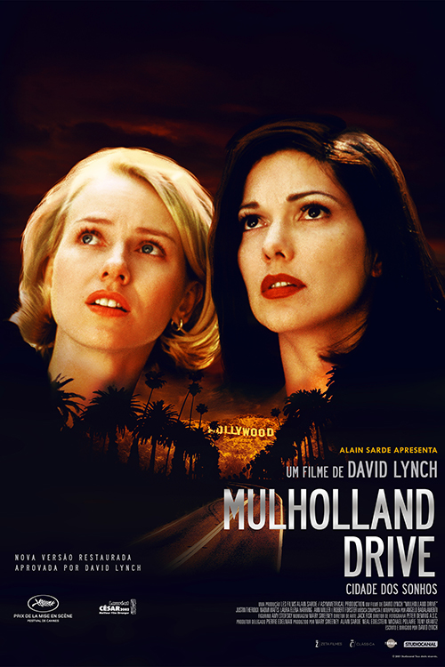
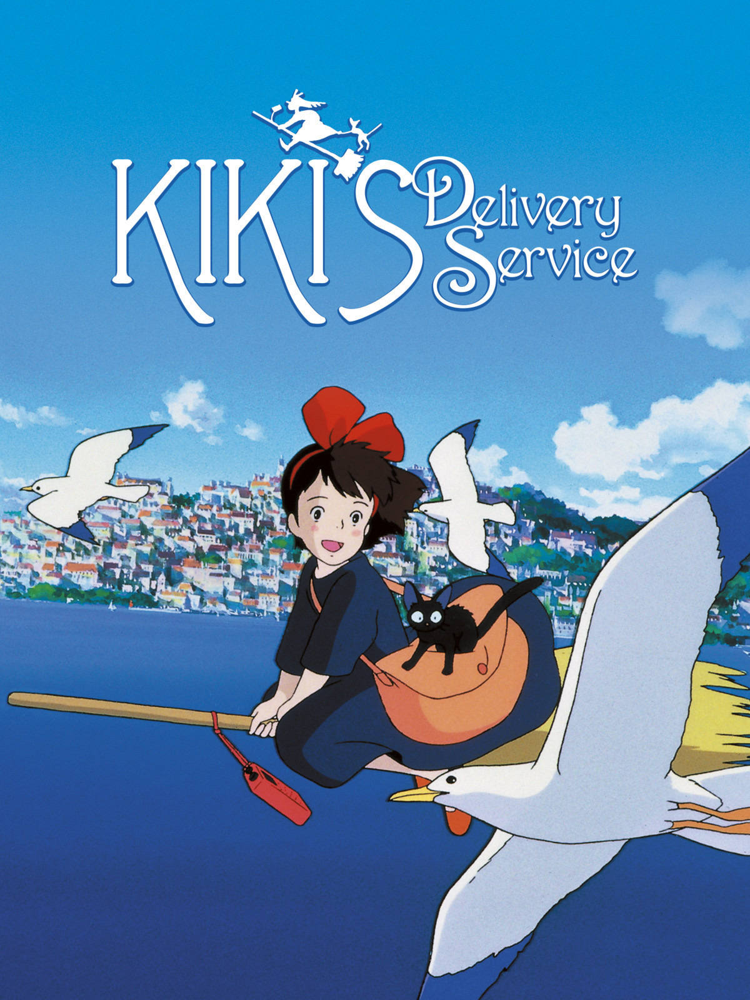
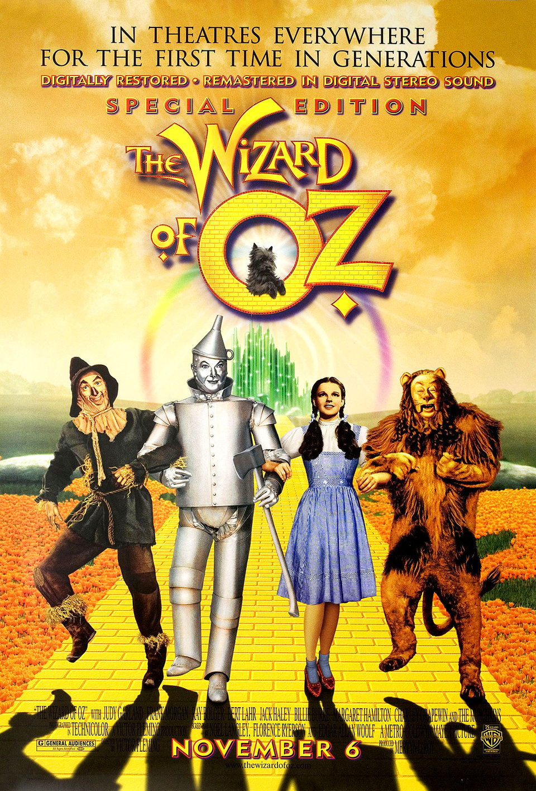

<!DOCTYPE html>
<html lang="en">
<head>
    <meta charset="UTF-8">
    <meta name="viewport" content="width=device-width, initial-scale=1.0">
    <title>Gabriel's Best Movies of All-Time</title>
</head>
<body>
    
</body>
</html>


 <h1>The Best Movies According to Gabriel</h1>
 <h2>My top 3 movies of all-time.</h2>
 <hr />
 <a href="https://www.youtube.com/watch?v=jbZJ487oJlY"></a>
 <h3>Mulholland Drive</h3>
 <p>Mulholland Drive is a surrealist dreamlike and mysterious film that explores the dark coners of the mind. you can't stop watching it and it gets better with each viewing.</p>
 <a href="https://www.youtube.com/watch?v=4bG17OYs-GA"></a>
 <h3>Kiki's Delivery Service</h3>
 <p>This film is a gentle breeze on a cool day. We follow Kiki, a newbie witch which is just trying her best: a reminder that you should try your best too and hold tight, the moment for you to shine is just around the conner!</p>
 <a href="https://www.youtube.com/watch?v=H_3T4DGw10U"></a>
 <h3>Wizard of Oz</h3>
 <p>Dreams and Fears. Wizard of Oz provides a window to the most vulnerable stage of human life that is childhood and the escapism in creating a fantasy world that interwine with reality to convey important messages on love and identity. Timeless film portraying the complex journey of self discovery. Sometimes you just need to look around you to find out you are exactly where you need to be.</p>
 
